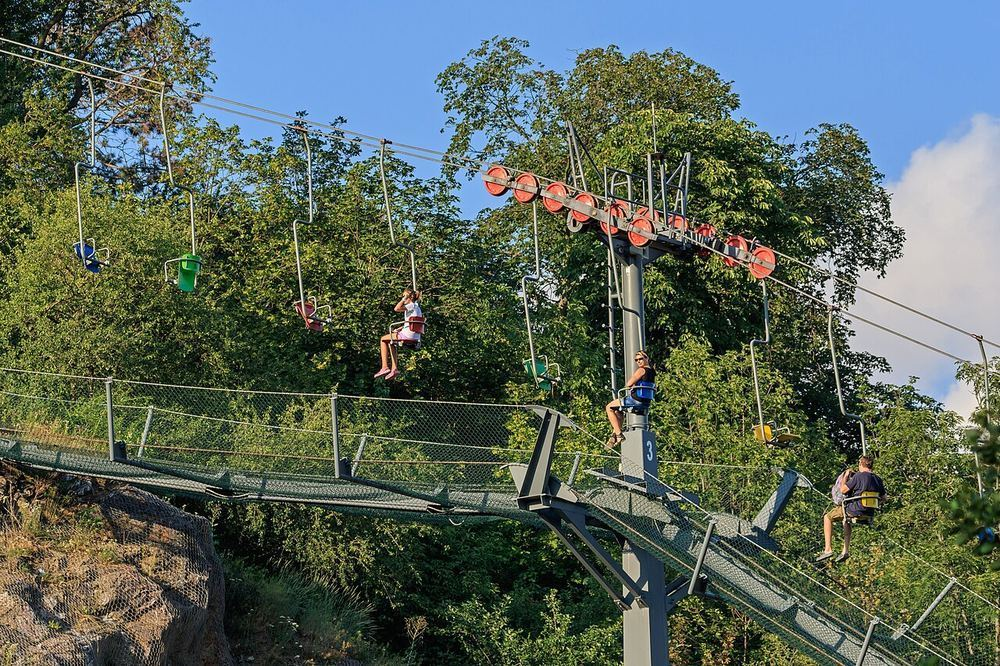

גן החיות של פראג
4.8/5 Google · 70,436- שעות
- באוגוסט 9:00–19:00 (כניסה אחרונה 18:30)
- מחיר למשפחה
- כרטיס משפחתי (2 מבוגרים + עד 4 ילדים): 850 קרונות באינטרנט / 1,000 בקופה (כ-35–41 €). נבדק
- זמן
- 4–5 שעות
מגני החיות הטובים בעולם: רכבל מעל הפארק, פינת ליטוף, ביתן ג'ונגל אינדונזי, גורילות ופילים.